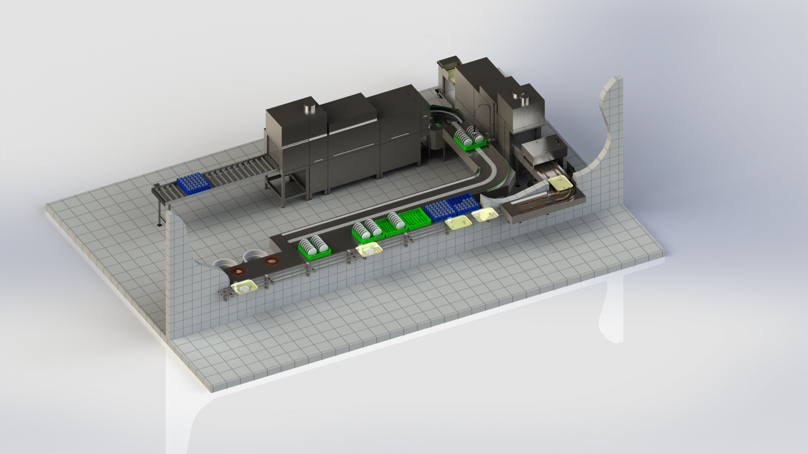
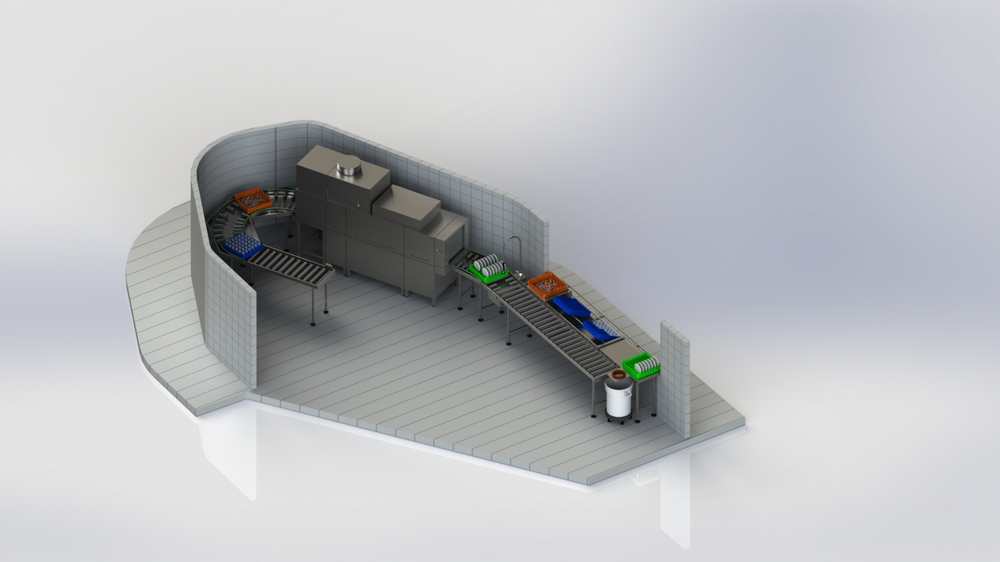
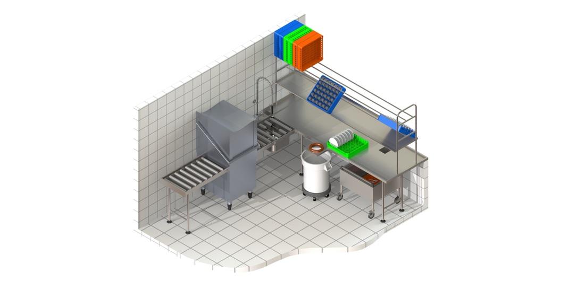
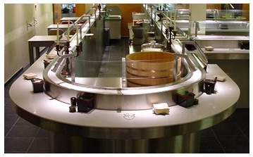
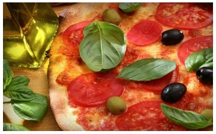
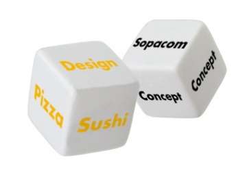
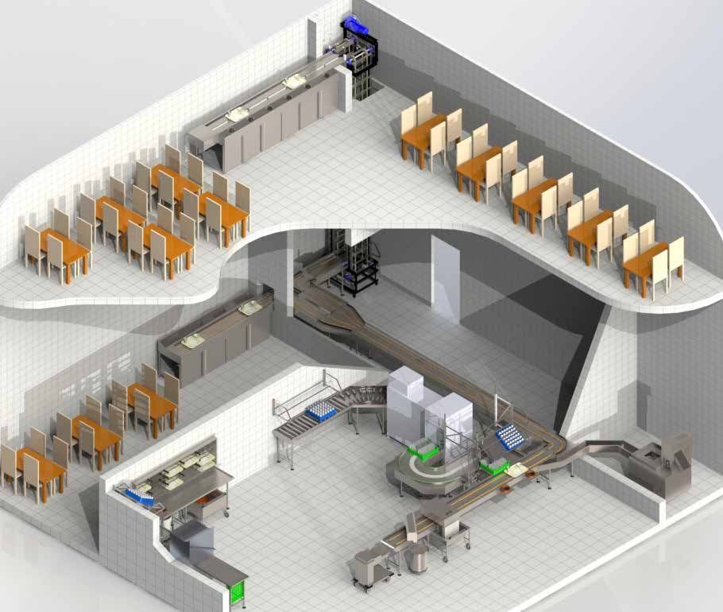

Six univers, une même exigence.
Chaque secteur impose ses contraintes de débit, d’espace, d’hygiène et d’organisation du personnel.
Restauration collective
Les installations en collectivités se distinguent toujours par le débit considérable qu’elles doivent traiter, étant donné le nombre exceptionnel de convives.

Contraintes du secteur
- Débit considérable lié au nombre de convives
- Tri des déchets, transport et traitement de la vaisselle et des couverts à réaliser efficacement
- Harmonie entre les convives et le personnel
- Évolution du concept dans le temps, selon les besoins d’exploitation
Gammes Sopacom associées
Contraintes reprises des textes Sopacom (Site actuel sopacom-industrie.fr). Gammes associées proposées à partir des fiches produits — correspondance à valider par Sopacom.
Restauration scolaire



Un secteur où Sopacom a acquis un savoir-faire unique : les cantines scolaires et universitaires.
Contraintes du secteur
- Budget consacré au projet le plus souvent limité
- Fonctionnement avec une équipe restreinte et un minimum de matériel
- Chartes de qualité et d’hygiène strictes
- Participation active des élèves au triage, en amont du plateau-repas
Gammes Sopacom associées
Contraintes reprises des textes Sopacom (Site actuel sopacom-industrie.fr). Gammes associées proposées à partir des fiches produits — correspondance à valider par Sopacom.

Hôtellerie
Le matériel doit être performant, fiable, polyvalent et capable d’assurer la liaison et la synergie entre les différentes parties de la cuisine.
Contraintes du secteur
- Liaison entre pâtisserie, boulangerie, cuisson et préparation
- Nombre et fonction du personnel, facteur décisif de conception
- Environnement humain et agréable pour le personnel
- Projets conçus avec des architectes, très souvent internationaux
Gammes Sopacom associées
Contraintes reprises des textes Sopacom (Site actuel sopacom-industrie.fr · Présentation « Environnement laverie mécanisé » (PDF Sopacom)). Gammes associées proposées à partir des fiches produits — correspondance à valider par Sopacom.
Restauration commerciale
La complexité des installations en restauration consiste à implanter un maximum de matériel et d’équipement dans un espace très limité.

Contraintes du secteur
- S’intégrer dans une surface définie et répondre à toutes les contraintes
- Maximum de matériel dans un espace très limité
- Originalité esthétique, en coopération avec des architectes réputés
Gammes Sopacom associées
Contraintes reprises des textes Sopacom (Site actuel sopacom-industrie.fr · Présentation « Environnement laverie mécanisé » (PDF Sopacom)). Gammes associées proposées à partir des fiches produits — correspondance à valider par Sopacom.
Pizza & sushi
En détournant notre expérience de la manutention mécanisée, nous avons interprété notre propre vision du Kaiten, « convoyeur à sushi » à palettes ou magnétique, entre tradition et modernité.



Contraintes du secteur
- Depuis 2005, Sopacom Concept participe au développement de la restauration thématique, avec les architectes et designers
- Une quarantaine de références dans le convoyeur à sushi « Sushi Bar »
- Pizza Concept : régularité des fabrications et culture de la performance
Concepts Sopacom
Contraintes reprises des textes Sopacom (Site actuel sopacom-industrie.fr).
Laveries professionnelles


Les grandes laveries vaisselle doivent toujours traiter en un temps donné une quantité importante de pièces. La laveuse demande une alimentation sans rupture.
Contraintes du secteur
- Alimentation sans rupture de la machine
- Cheminements horizontaux et verticaux
- Organisation toujours similaire, jamais identique : dépose, triage sélectif, transport, décrochage, entrée et sortie machine, traitement des déchets, stockage
- Selon Sopacom, il n’existe quasiment pas d’obstacle à l’implantation de ses environnements laverie
Gammes Sopacom associées
Contraintes reprises des textes Sopacom (Présentation « Environnement laverie mécanisé » (PDF Sopacom)). Gammes associées proposées à partir des fiches produits — correspondance à valider par Sopacom.